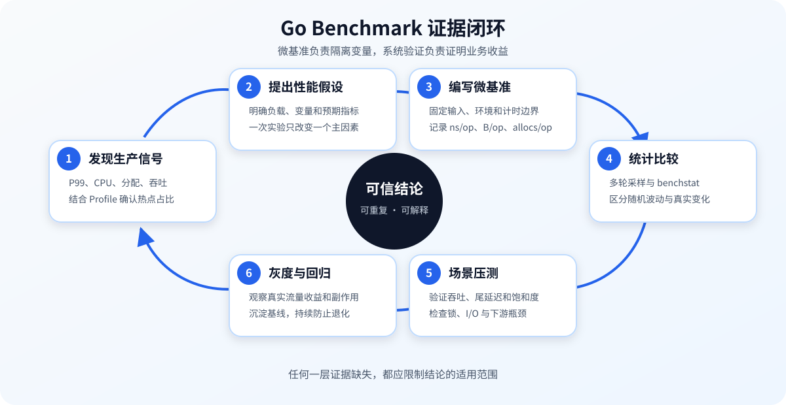
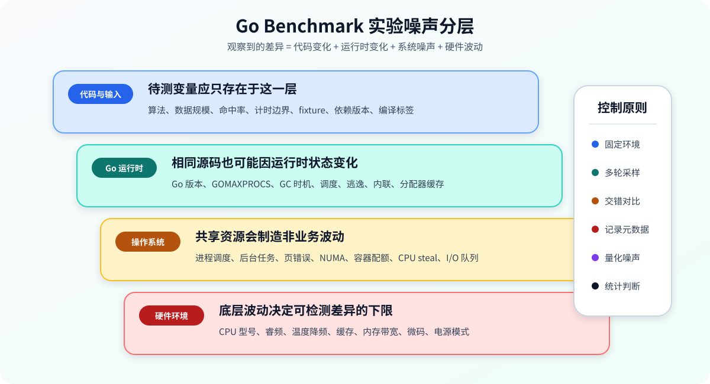

Go Benchmark 最佳实战
Benchmark 的价值不是生成一个更小的
ns/op，而是通过可重复、可解释的实验回答：某个改动是否真的改善了目标负载，以及这种改善是否足以覆盖复杂度和风险。
本文以 Go 1.24 及以上版本为主要环境，优先使用 testing.B.Loop。旧版 Go 可将其替换为传统的 for i := 0; i < b.N; i++。文中的命令以 Bash 风格展示，在 PowerShell 中应按对应语法设置环境变量和重定向。
目录
- 1. Benchmark 能回答什么
- 2. 第一个可信的基准测试
- 3. 理解 testing.B 的计时模型
- 4. 设计有代表性的实验
- 5. 子基准与参数矩阵
- 6. 指标与结果解读
- 7. 并行与并发 Benchmark
- 8. 用 benchstat 做统计比较
- 9. 用 pprof 解释差异
- 10. 常见失真与修正方法
- 11. 完整优化案例
- 12. CI 性能回归
- 13. 命令速查
- 14. 实战检查清单
1. Benchmark 能回答什么
Go Benchmark 是由 testing 包提供的微基准测试机制。它擅长隔离并测量一段代码的：
- 单次操作耗时；
- 每次操作的堆分配字节数和分配次数；
- 单位时间吞吐量；
- 不同输入规模下的复杂度变化；
- 串行与并行场景中的资源竞争；
- 优化前后的统计差异。
它不能直接证明：
- 服务的 P99 延迟一定下降；
- 数据库、网络和第三方依赖在生产中表现相同；
- 更高的微基准吞吐能带来更高的系统吞吐；
- 在开发机上成立的结果能跨 CPU、操作系统和 Go 版本成立；
- 一个统计显著的差异具有足够大的工程价值。
因此应区分三层验证：
| 层次 | 主要问题 | 常用工具 |
|---|---|---|
| 微基准 | 某个函数或数据结构本身是否更快 | go test -bench、benchstat |
| 组件/场景压测 | 多个模块协作后吞吐和延迟如何 | 自建负载程序、HTTP/gRPC 压测工具 |
| 生产验证 | 真实流量、资源限制和依赖抖动下是否有效 | 指标、链路追踪、灰度、Profile |

一个完整的性能结论应形成以下证据链：
- 从生产指标、Profile 或复杂度分析中提出性能假设；
- 用微基准隔离变量，验证热点代码是否按预期改善；
- 用统计工具确认差异不是随机噪声；
- 用场景压测确认改动没有被 I/O、锁或下游瓶颈抵消；
- 灰度上线，检查尾延迟、错误率、CPU、内存和成本。
2. 第一个可信的基准测试
假设需要为缓存构建键：
package cachekey
import (
"strconv"
"strings"
)
func Build(tenant string, id int64) string {
var builder strings.Builder
builder.Grow(len(tenant) + 1 + 20)
builder.WriteString(tenant)
builder.WriteByte(':')
builder.WriteString(strconv.FormatInt(id, 10))
return builder.String()
}
对应的基准测试文件必须以 _test.go 结尾，函数名以 Benchmark 开头，并接收 *testing.B：
package cachekey
import "testing"
var benchmarkResult string
func BenchmarkBuild(b *testing.B) {
tenant := "tenant-a"
const id int64 = 42
b.ReportAllocs()
for b.Loop() {
benchmarkResult = Build(tenant, id)
}
}
运行：
go test -run='^$' -bench='^BenchmarkBuild$' -benchmem -count=10 .
参数含义：
| 参数 | 作用 |
|---|---|
-run='^$' |
不运行普通单元测试，避免额外耗时和环境干扰 |
-bench='^BenchmarkBuild$' |
只运行名称完全匹配的基准 |
-benchmem |
输出每次操作的分配字节数和分配次数 |
-count=10 |
独立重复 10 轮，为统计比较提供样本 |
. |
测试当前包 |
典型输出：
goos: linux
goarch: amd64
pkg: example.com/project/cachekey
cpu: AMD EPYC 7B13
BenchmarkBuild-8 18324567 64.31 ns/op 24 B/op 1 allocs/op
可读作：
BenchmarkBuild-8：基准名称；8是本次测试的GOMAXPROCS，不是请求并发数；18324567：测试框架在该轮执行的操作次数；64.31 ns/op：平均每次操作耗时约 64.31 纳秒；24 B/op：每次操作平均产生 24 字节堆分配；1 allocs/op：每次操作平均发生 1 次堆分配。
这里的 benchmarkResult 是包级结果槽，用于让旧版编译器难以证明结果无用并删除整个计算。对 Go 1.24+ 的 b.Loop，测试框架和编译器已对循环体优化提供更稳健的保护，但显式消费结果仍能表达测试意图，并兼容旧版写法。
2.1 兼容旧版 Go
Go 1.24 以前使用 b.N：
func BenchmarkBuildLegacy(b *testing.B) {
tenant := "tenant-a"
const id int64 = 42
b.ReportAllocs()
b.ResetTimer()
for i := 0; i < b.N; i++ {
benchmarkResult = Build(tenant, id)
}
}
b.N 不是固定值。测试框架会先试运行，再逐步增加迭代次数，直到测量时间达到目标。不要把 b.N 当作业务输入规模，也不要在循环内修改它。
2.2 Benchmark 不是正确性测试
基准循环中不要反复做完整断言，否则测到的主要是断言成本。正确做法是：
- 用单元测试覆盖正确性和边界条件；
- 在 Benchmark 计时前做一次必要的前置校验；
- 循环内只执行必须纳入测量的业务逻辑。
func BenchmarkBuildWithSanityCheck(b *testing.B) {
const want = "tenant-a:42"
if got := Build("tenant-a", 42); got != want {
b.Fatalf("Build() = %q, want %q", got, want)
}
for b.Loop() {
benchmarkResult = Build("tenant-a", 42)
}
}
3. 理解 testing.B 的计时模型
3.1 b.Loop 如何工作
标准写法：
func BenchmarkLookup(b *testing.B) {
table := newTable()
for b.Loop() {
_ = table.Lookup("key")
}
}
b.Loop() 第一次调用时开始计时，在返回 false 时停止计时。因此，第一次调用前的准备工作默认不计入耗时，更不容易误把 fixture 构造成本算进目标操作。
它还减少了传统 b.N 写法中常见的两个错误：
- 忘记在昂贵初始化后调用
b.ResetTimer()； - 循环体被编译器过度优化，导致测到的不是目标逻辑。
但 b.Loop 不会自动修正错误的实验设计。循环内的日志、随机数生成、fixture 重建和磁盘访问仍会真实计入结果。
3.2 ResetTimer、StopTimer 与 StartTimer
传统 b.N 模式中，初始化之后通常需要重置：
func BenchmarkParseLegacy(b *testing.B) {
payload := loadFixture()
b.ReportAllocs()
b.ResetTimer()
for i := 0; i < b.N; i++ {
_ = Parse(payload)
}
}
如果每轮都必须执行一些不属于目标操作的准备工作，可以暂停计时：
func BenchmarkConsume(b *testing.B) {
for i := 0; i < b.N; i++ {
b.StopTimer()
queue := newQueueWithOneItem()
b.StartTimer()
_ = queue.Consume()
}
}
但不要频繁使用这种模式：
- 启停计时本身有开销，特别容易污染纳秒级基准；
- 每轮重建状态会改变缓存、分配和 GC 行为；
- 排除准备成本后，结果可能不再代表真实业务操作。
更好的方式通常是批量预构造输入，或将“纯处理成本”和“端到端成本”拆成两个基准。
3.3 -benchtime 控制测量时间
默认情况下，框架会自动选择迭代次数。可以显式设置目标时长：
go test -run='^$' -bench='BenchmarkBuild$' -benchtime=3s -count=10 .
也可以固定操作次数：
go test -run='^$' -bench='BenchmarkBuild$' -benchtime=100000x .
适用建议：
- 纳秒级纯 CPU 操作：适当延长到
2s或3s，降低调度和时钟噪声； - 昂贵操作：默认时间通常足够，先避免测试耗时失控；
- 外部服务或限额 API：不要盲目延长，以免触发限流或产生费用；
- 固定次数模式：适合诊断、Profile 或复现固定工作量，不适合直接替代稳定性采样。
4. 设计有代表性的实验

基准结果同时受到代码、运行时、操作系统和硬件影响。可信实验的核心是：只让待研究变量发生变化。
4.1 固定实验环境
至少记录：
go version
go env GOOS GOARCH GOAMD64 CGO_ENABLED
git rev-parse HEAD
同时尽量固定：
- 同一台机器、同一 CPU 型号和微码；
- 同一 Go 工具链、依赖版本和构建标签；
- 相同
GOMAXPROCS、环境变量和容器 CPU 配额； - 相同电源模式，避免笔记本电池模式和温度降频；
- 相同数据集、输入分布和随机种子；
- 关闭无关的编译、同步、杀毒扫描等后台高负载任务。
虚拟机、共享 CI Runner 和突发型云主机会引入明显的 CPU steal、邻居竞争与频率波动。它们适合发现数量级退化，不适合判断 1%～3% 的微小变化。
4.2 选择代表性输入
只测 "hello"、空切片或 1 个元素通常会掩盖真实复杂度。输入矩阵至少考虑：
- 小、中、大数据规模；
- 常见路径与最坏路径；
- 命中与未命中；
- ASCII 与 Unicode；
- 已排序、随机和逆序数据；
- 稀疏与稠密数据；
- 正常输入和接近限制的输入。
输入应来自业务分布，而不是为了让某个实现赢得测试。若线上 95% 的请求小于 2 KiB，测试只使用 1 MiB 数据并据此优化，结论可能毫无业务价值。
4.3 把输入规模和迭代次数分开
错误示例：
func BenchmarkSortWrong(b *testing.B) {
values := make([]int, b.N) // 错误：b.N 是迭代次数，不是数据规模
for b.Loop() {
slices.Sort(values)
}
}
输入规模应由子基准参数明确控制：
func BenchmarkSort(b *testing.B) {
for _, size := range []int{10, 1000, 100000} {
b.Run(fmt.Sprintf("size=%d", size), func(b *testing.B) {
source := newRandomInts(size, 42)
work := make([]int, size)
for b.Loop() {
copy(work, source)
slices.Sort(work)
}
})
}
}
这里测量的是“复制输入并排序”的成本。如果只想比较排序算法，应单独说明复制是否计时，并确保每次排序面对相同的未排序数据。
4.4 冷缓存与热缓存
连续运行同一循环通常测到热缓存表现：
- 指令已进入 CPU 指令缓存；
- 数据可能留在 L1/L2/L3 缓存；
- 分支预测器已学习稳定模式；
- map、连接池和对象池已经预热。
热缓存并非错误，它适合描述高频常驻路径。但冷启动、低频 CLI、首次正则编译或首次建立连接需要单独测试。不要把两者混为一个数字。
4.5 随机输入应固定种子
使用时间作为随机种子会令每轮样本不同，降低可重复性：
func newRandomInts(size int, seed int64) []int {
rng := rand.New(rand.NewSource(seed))
values := make([]int, size)
for i := range values {
values[i] = rng.Int()
}
return values
}
随机数据的生成一般放在计时区间外。若研究目标本身就是随机数生成器，则生成过程当然应计时。
5. 子基准与参数矩阵
5.1 用 b.Run 表达变量
不要复制多个仅参数不同的 Benchmark：
func BenchmarkEncode(b *testing.B) {
cases := []struct {
name string
size int
}{
{name: "small", size: 128},
{name: "medium", size: 4 << 10},
{name: "large", size: 1 << 20},
}
for _, tc := range cases {
b.Run(tc.name, func(b *testing.B) {
payload := bytes.Repeat([]byte("a"), tc.size)
dst := make([]byte, base64.StdEncoding.EncodedLen(len(payload)))
b.SetBytes(int64(len(payload)))
b.ReportAllocs()
for b.Loop() {
base64.StdEncoding.Encode(dst, payload)
}
})
}
}
运行某个子基准：
go test -run='^$' -bench='^BenchmarkEncode/medium$' -benchmem .
-bench 使用正则表达式，并按 / 分段匹配。给名称加入 size=4096、hit=true 之类的参数，可以让输出自解释，也方便筛选和统计。
5.2 比较多个实现
通过同一输入比较实现：
func BenchmarkJoin(b *testing.B) {
parts := []string{"tenant", "region", "resource", "42"}
b.Run("Builder", func(b *testing.B) {
for b.Loop() {
benchmarkResult = joinWithBuilder(parts)
}
})
b.Run("Join", func(b *testing.B) {
for b.Loop() {
benchmarkResult = strings.Join(parts, ":")
}
})
}
比较必须保证语义等价。一个实现若省略转义、边界校验或错误处理，即使更快也不是合法替代品。先用共享测试用例证明等价，再比较性能。
5.3 Benchmark 也要表驱动
参数多时使用表驱动，但不要一次展开几十个次要维度。基准矩阵过大将导致：
- 运行时间过长；
- 样本难以阅读；
- 多重比较增加偶然显著结果；
- CI 资源被低价值组合占用。
优先选择能代表生产分布、复杂度拐点和已知风险的组合。
6. 指标与结果解读
6.1 时间指标
ns/op 是总计时时间除以操作次数。它是墙钟时间，不等于纯 CPU 时间。锁等待、调度、系统调用和 I/O 等待都会进入结果。
常用换算：
1 s = 1,000 ms
1 ms = 1,000 μs
1 μs = 1,000 ns
不要用 1 / ns/op 简单推导服务 QPS，除非操作完全串行且不存在其他开销。真实吞吐还受并发、排队、资源竞争和下游容量影响。
6.2 分配指标
开启方式：
b.ReportAllocs()
或命令行统一开启：
go test -run='^$' -bench=. -benchmem .
指标含义：
B/op：每次操作分配到堆上的平均字节数；allocs/op：每次操作的平均堆分配次数。
它们不包括所有内存成本，例如栈空间、运行时内部缓存、操作系统页缓存和 CGO 管理的内存。0 allocs/op 也不意味着函数不使用内存，只表示测量中没有观察到每次操作的堆分配。
分配减少通常能降低 GC 压力，但不能脱离耗时判断。为消除一次分配而引入复杂池化、锁竞争或对象生命周期错误，可能得不偿失。
6.3 吞吐指标
SetBytes 声明每次操作处理的字节数：
func BenchmarkHash(b *testing.B) {
payload := make([]byte, 1<<20)
b.SetBytes(int64(len(payload)))
for b.Loop() {
_ = sha256.Sum256(payload)
}
}
输出会增加类似：
1650.23 MB/s
这比单看 ns/op 更容易比较不同数据规模下的处理效率。
6.4 自定义指标
使用 ReportMetric 报告业务相关指标：
func BenchmarkBatch(b *testing.B) {
const itemsPerBatch = 100
for b.Loop() {
processBatch(itemsPerBatch)
}
b.ReportMetric(float64(itemsPerBatch), "items/op")
}
常见单位：
items/op：每次操作处理多少条记录；requests/s：每秒请求数；ns/item：每条记录耗时；hit/op：每次操作命中次数。
单位应保持一致且可比较。不要把只对单次运行有效的总数伪装成每次操作指标。
6.5 使用 -json 保存机器可读结果
go test -json -run='^$' -bench=. -benchmem ./... > benchmark.json
-json 适合流水线采集测试事件，但性能统计工具通常直接消费标准 benchmark 文本。应根据后续工具链选择格式，不要依赖脆弱的正则从人类可读输出中自行提取字段。
7. 并行与并发 Benchmark
7.1 RunParallel
并行基准用于研究多个 goroutine 同时调用目标代码时的吞吐和竞争：
func BenchmarkCounterParallel(b *testing.B) {
var counter atomic.Int64
b.RunParallel(func(pb *testing.PB) {
for pb.Next() {
counter.Add(1)
}
})
}
运行时固定 CPU 并行度：
go test -run='^$' -bench='^BenchmarkCounterParallel$' \
-cpu=1,2,4,8 -count=10 .
RunParallel 会让多个 goroutine 分摊总操作数。默认并行度与 GOMAXPROCS 相关，但它不是“同时 1000 个用户”的负载模型。
7.2 SetParallelism
需要增加每个 P 上的 goroutine 数量时：
func BenchmarkPoolParallel(b *testing.B) {
pool := newPool()
b.SetParallelism(4)
b.RunParallel(func(pb *testing.PB) {
for pb.Next() {
item := pool.Get()
pool.Put(item)
}
})
}
SetParallelism(4) 使并行 goroutine 数大致变为 4 * GOMAXPROCS。它适用于高等待比例或研究竞争的场景，不应为了让数字更好看而调整。
7.3 并行基准的状态边界
明确哪些状态共享、哪些状态属于 goroutine：
func BenchmarkParserParallel(b *testing.B) {
payload := []byte(`{"id":42,"name":"alice"}`) // 只读，可安全共享
b.RunParallel(func(pb *testing.PB) {
var dst Record // 每个 worker 独占
for pb.Next() {
dst = Record{}
if err := json.Unmarshal(payload, &dst); err != nil {
// FailNow/Fatal 只能由运行 Benchmark 的主 goroutine 调用。
// 固定合法输入在此不应失败，panic 用于暴露 fixture 损坏。
panic(err)
}
}
})
}
如果目标代码只在 Benchmark 中出现数据竞争，结果没有解释价值。先运行：
go test -race ./...
但不要用 -race 的耗时作为性能基线，因为竞态检测会显著改变内存访问、调度和执行时间。
7.4 吞吐扩展性
并行度从 1 增加到 8，不代表吞吐应线性提升 8 倍。扩展受以下因素限制：
- 临界区和原子操作竞争；
- 内存带宽与缓存一致性；
- 伪共享；
- GC 和分配器竞争；
- 下游连接池、文件描述符与网络带宽；
- CPU 配额和操作系统调度。
应同时比较每操作耗时、总吞吐、CPU 利用率和 Profile，而不是只看一个并行结果。
8. 用 benchstat 做统计比较
8.1 为什么不能比较单次结果
两次运行可能得到：
old: 63.2 ns/op
new: 61.9 ns/op
1.3 ns 的变化可能来自代码，也可能来自：
- CPU 睿频和温度；
- 操作系统调度；
- 后台进程；
- 地址空间布局；
- GC 触发时机；
- 缓存与分支预测状态。
单次数字没有提供样本分布，不能支持可靠结论。
8.2 采集样本
安装 benchstat 时应在项目工具模块中锁定 golang.org/x/perf 的明确版本，保证团队与 CI 使用相同工具。采集改动前后结果：
go test -run='^$' -bench='^BenchmarkBuild$' \
-benchmem -benchtime=2s -count=15 . > old.txt
# 应用待验证改动后，在相同环境再次执行
go test -run='^$' -bench='^BenchmarkBuild$' \
-benchmem -benchtime=2s -count=15 . > new.txt
benchstat old.txt new.txt
示意输出：
│ old.txt │ new.txt │
│ sec/op │ sec/op vs base │
Build-8 64.20n ± 2% 51.80n ± 1% -19.31% (p=0.000 n=15)
│ old.txt │ new.txt │
│ B/op │ B/op vs base │
Build-8 24.00 ± 0% 8.00 ± 0% -66.67% (p=0.000 n=15)
重点阅读：
- 中心值：两组典型表现；
- 波动范围：实验是否稳定；
- 变化百分比：工程收益有多大；
p值：现有样本下，差异由随机波动解释的可能性；- 样本数：统计判断的基础。
统计显著不等于工程显著。一个稳定的 -0.8% 可能不值得增加复杂度；一个 -20% 的热点优化通常更有价值，但仍要验证端到端收益。
8.3 交错采样降低时间漂移
先连续跑完 old，再跑 new，可能把温度和后台负载的时间漂移误认为版本差异。更严格的实验可：
- 在同一提交中保留
Old和New两个语义等价实现； - 用子基准在同一次进程中运行；
- 多轮交错 old/new 构建或执行；
- 保证每组样本覆盖相似的时间区间。
若两个实现无法共存，应在可控环境中多次交替切换提交，并记录完整元数据。
8.4 回归阈值要考虑噪声
不要简单规定“ns/op 增加 1% 就阻断合并”。稳定的性能门禁需要：
- 专用或足够稳定的 Runner；
- 足够样本数；
- 与机器噪声匹配的阈值；
- 对关键基准和次要基准分级；
- 保留原始样本供人工复核；
- 对明显回归自动告警，对边界结果重新采样。
9. 用 pprof 解释差异
Benchmark 告诉你“变快或变慢了多少”，Profile 用于解释“时间和内存花在哪里”。
9.1 CPU Profile
go test -run='^$' -bench='^BenchmarkEncode/large$' \
-benchtime=10s -cpuprofile=cpu.out .
go tool pprof -http=:0 cpu.out
分析时关注：
flat：函数自身消耗；cum：函数及其下游累计消耗；- 热点是否位于目标业务代码；
- 测试 fixture、随机生成、日志或断言是否意外成为热点；
- 优化后热点是否转移。
Profile 有采样开销，带 Profile 的结果不要与普通基准数字直接混用。延长 -benchtime 可以收集更多样本，使热点更清晰。
9.2 内存 Profile
go test -run='^$' -bench='^BenchmarkEncode/large$' \
-benchmem -benchtime=10s -memprofile=mem.out .
go tool pprof -http=:0 -alloc_space mem.out
常用视角：
| 视角 | 适合回答 |
|---|---|
alloc_space |
整个运行期间哪些调用路径累计分配最多 |
alloc_objects |
哪些路径创建对象数量最多 |
inuse_space |
Profile 时仍存活的内存主要在哪里 |
inuse_objects |
Profile 时仍存活的对象数量主要在哪里 |
微基准优化分配通常优先看 alloc_space 和 alloc_objects。inuse_* 受采样时机、GC 和对象生命周期影响，更适合分析存活集。
9.3 编译器诊断
查看内联和逃逸分析：
go test -run='^$' -bench='^BenchmarkBuild$' \
-gcflags='all=-m=2' . 2> compiler.txt
诊断信息用于提出假设，不应机械追求“零逃逸”：
- 合理的返回值可能必须逃逸；
- 内联决策会随 Go 版本变化；
- 消除分配可能增加复制或锁竞争；
- 只有 Benchmark 和 Profile 证明它是主要成本时，才值得优化。
10. 常见失真与修正方法
10.1 把初始化算进目标操作
错误：
func BenchmarkSearchWrong(b *testing.B) {
for b.Loop() {
index := buildIndex(largeDataset)
_ = index.Search("go")
}
}
如果目标是搜索性能，应把建索引移到循环外：
func BenchmarkSearch(b *testing.B) {
index := buildIndex(largeDataset)
for b.Loop() {
_ = index.Search("go")
}
}
如果生产中每次请求确实都会建索引，则原写法才代表真实路径。计时边界取决于问题，不取决于哪个结果更漂亮。
10.2 重复使用已被修改的输入
错误：
func BenchmarkSortWrong(b *testing.B) {
values := newRandomInts(10000, 42)
for b.Loop() {
slices.Sort(values)
}
}
第一次之后输入已经有序，后续测到的是“重复排序有序切片”。修正方式：
func BenchmarkSort(b *testing.B) {
source := newRandomInts(10000, 42)
work := make([]int, len(source))
for b.Loop() {
copy(work, source)
slices.Sort(work)
}
}
此时复制成本属于结果的一部分。若只研究排序本身，可将复制放在暂停计时区间，但必须在文档中明确计时边界，并意识到频繁启停计时会影响短基准。
10.3 循环内生成随机数或日志
错误：
for b.Loop() {
input := randString(128)
result := Parse(input)
slog.Info("parsed", "result", result)
}
除非目标就是测随机生成或日志，否则应提前构建输入，并删除循环内日志。日志不仅增加 I/O 和格式化成本，还可能改变分配、锁竞争和调度。
10.4 忽略返回值
传统 b.N 写法中，如果编译器证明结果不可观察，可能删除部分甚至全部工作：
for i := 0; i < b.N; i++ {
strings.Repeat("x", 10)
}
消费结果：
var benchmarkBytes []byte
func BenchmarkEncodeLegacy(b *testing.B) {
input := []byte("payload")
for i := 0; i < b.N; i++ {
benchmarkBytes = Encode(input)
}
}
不要为了防优化而在循环内做文件写入、打印或复杂断言，它们会制造更大的测量偏差。
10.5 使用不等价实现
典型问题：
- 一个版本校验 UTF-8，另一个不校验；
- 一个版本复制返回数据，另一个暴露内部缓冲区；
- 一个版本线程安全，另一个仅支持单 goroutine；
- 一个版本处理错误，另一个假设永不失败；
- 一个版本复用对象，但调用方未按要求归还。
性能比较的第一前提是契约等价。应使用相同测试用例、模糊测试或属性测试验证语义。
10.6 只测最佳输入
哈希表全命中、正则固定短文本、解析器只处理合法小输入，都会让结果偏离生产。至少把高频路径、慢路径和失败路径分开命名测试。
10.7 在共享机器上判断微小差异
如果同一版本连续运行的波动已经达到 ±5%，就不能根据 2% 的版本差异下结论。先量化噪声基线，再决定最小可检测变化。
10.8 同时修改多个变量
升级 Go、修改算法、调整 GOMAXPROCS 并更换机器后，无法归因。一次实验只改变一个主要变量；多个必要改动应逐步采样。
10.9 用 -race、覆盖率或调试构建比较性能
这些工具会插桩并改变代码特征：
go test -race -bench=. # 用于发现竞态，不作为性能结论
go test -cover -bench=. # 覆盖率插桩会污染性能
go test -bench=. # 性能采样使用普通构建
正确性检查和性能采样都要做，但应分开运行。
10.10 将微基准直接外推到生产
字符串拼接快 30%，但如果它只占请求 CPU 的 1%，端到端收益上限也很小。可用近似的 Amdahl 定律判断：
总加速比 = 1 / ((1 - 热点占比) + 热点占比 / 热点加速比)
若热点占总耗时 10%，热点本身提升 2 倍：
总加速比 = 1 / (0.9 + 0.1 / 2) ≈ 1.053
理论端到端提升只有约 5.3%。这能帮助判断优化是否值得进入生产验证。
11. 完整优化案例
11.1 问题：构建批量资源键
初始实现：
func BuildKeysV1(tenant string, ids []int64) []string {
keys := make([]string, 0)
for _, id := range ids {
keys = append(keys, fmt.Sprintf("%s:%d", tenant, id))
}
return keys
}
优化假设：
- 输出长度已知，切片可以预分配；
fmt.Sprintf是通用格式化路径，固定格式可用strconv.AppendInt；- 每个字符串最终仍需独立存储，不能仅追求零分配而改变返回值契约。
优化实现：
func BuildKeysV2(tenant string, ids []int64) []string {
keys := make([]string, len(ids))
buf := make([]byte, 0, len(tenant)+1+20)
for i, id := range ids {
buf = buf[:0]
buf = append(buf, tenant...)
buf = append(buf, ':')
buf = strconv.AppendInt(buf, id, 10)
keys[i] = string(buf)
}
return keys
}
这里 string(buf) 必须产生稳定字符串。不能使用不安全的零复制转换，因为下一轮会复用并修改 buf，而且公开契约没有要求调用方接受可变别名。
11.2 语义测试
func TestBuildKeysImplementations(t *testing.T) {
tests := []struct {
name string
tenant string
ids []int64
}{
{name: "empty", tenant: "t", ids: nil},
{name: "single", tenant: "t", ids: []int64{42}},
{name: "negative", tenant: "tenant-a", ids: []int64{-1, 0, 1}},
{name: "unicode", tenant: "租户", ids: []int64{7, 8}},
}
for _, tt := range tests {
t.Run(tt.name, func(t *testing.T) {
gotV1 := BuildKeysV1(tt.tenant, tt.ids)
gotV2 := BuildKeysV2(tt.tenant, tt.ids)
if !slices.Equal(gotV1, gotV2) {
t.Fatalf("V1 = %v, V2 = %v", gotV1, gotV2)
}
})
}
}
11.3 参数化 Benchmark
var benchmarkKeys []string
func BenchmarkBuildKeys(b *testing.B) {
implementations := []struct {
name string
fn func(string, []int64) []string
}{
{name: "v1_fmt", fn: BuildKeysV1},
{name: "v2_append", fn: BuildKeysV2},
}
for _, size := range []int{1, 10, 1000} {
ids := make([]int64, size)
for i := range ids {
ids[i] = int64(i)
}
for _, impl := range implementations {
b.Run(fmt.Sprintf("%s/size=%d", impl.name, size), func(b *testing.B) {
b.ReportAllocs()
for b.Loop() {
benchmarkKeys = impl.fn("tenant-a", ids)
}
})
}
}
}
运行和比较：
go test -run='^TestBuildKeysImplementations$' .
go test -run='^$' -bench='^BenchmarkBuildKeys$' \
-benchmem -benchtime=2s -count=15 . > result.txt
benchstat result.txt
该输出会分别汇总各个子基准的样本分布。若要获得严格的“改动前/改动后”差异百分比，应让公开的 BuildKeys 在两个提交中分别指向 V1 和 V2，保持同一个 BenchmarkBuildKeysProduction 名称，再生成 old.txt、new.txt 交给 benchstat old.txt new.txt。即使结果显示 V2 明显更快，也还需检查：
- 大输入是否造成更高峰值内存；
- Profile 是否确认收益来自预期路径；
- 真实请求中该函数占比是否足够；
- 新实现的可读性和维护成本是否可接受；
- Go 版本升级后优势是否仍存在。
12. CI 性能回归
12.1 分层执行
建议把性能验证分成三层：
| 层级 | 触发时机 | 范围 | 目的 |
|---|---|---|---|
| 快速检查 | 每次提交 | 少量关键 Benchmark，短时运行 | 捕获数量级退化 |
| 稳定回归 | 合并请求或每日定时 | 专用机器，多轮采样 | 统计比较 |
| 场景压测 | 发布前或关键改动 | 接近生产的服务与依赖 | 验证 SLO 和容量 |
普通共享 CI 适合检查“是否从 100 ns 退化到 10 μs”，不应轻易对 2% 差异做硬门禁。
12.2 保存实验元数据
每次结果至少关联：
- Git 提交 SHA；
- Go 版本；
- 操作系统、架构和 CPU 型号；
GOMAXPROCS与容器 CPU 配额；- Benchmark 命令及环境变量；
- 依赖锁文件；
- 原始输出，而不仅是汇总百分比；
- Runner 标识和采样时间。
没有元数据的历史曲线很难解释：变化可能来自业务代码，也可能来自工具链、机器迁移或配置调整。
12.3 门禁策略
稳健策略示例：
- 只对少量关键路径设置阻断门禁；
- 同时评估
ns/op、B/op和allocs/op； - 性能下降超过阈值且统计显著时重新采样；
- 第二次仍确认回归才阻断；
- 允许带原因、期限和负责人进行基线更新；
- 定期清理失去业务价值的基准。
不要将所有 Benchmark 都变成硬门禁。过多不稳定告警会让团队习惯忽略真正的回归。
12.4 基准代码也是生产资产
Benchmark 应接受与普通代码相同的审查：
- 名称是否表达场景和参数；
- fixture 是否代表生产；
- 是否无意共享可变状态；
- 是否把 setup 算入计时；
- 结果是否被消费；
- 是否记录关键分配指标；
- 是否能在合理时间内稳定执行；
- 实现契约变化时是否同步更新。
13. 命令速查
13.1 运行范围
# 当前包全部 Benchmark
go test -run='^$' -bench=. .
# 所有包全部 Benchmark
go test -run='^$' -bench=. ./...
# 精确匹配一个 Benchmark
go test -run='^$' -bench='^BenchmarkBuild$' .
# 匹配一个子基准
go test -run='^$' -bench='^BenchmarkEncode/large$' .
13.2 稳定性与内存
# 输出分配指标并重复 15 轮
go test -run='^$' -bench=. -benchmem -count=15 .
# 每轮目标测量 3 秒
go test -run='^$' -bench=. -benchtime=3s -count=10 .
# 固定执行 100000 次
go test -run='^$' -bench=. -benchtime=100000x .
13.3 CPU 并行度
# 分别使用 1、2、4、8 个 P 运行
go test -run='^$' -bench='Parallel$' -cpu=1,2,4,8 -count=10 .
13.4 Profile 与 Trace
# CPU Profile
go test -run='^$' -bench='BenchmarkX$' \
-benchtime=10s -cpuprofile=cpu.out .
go tool pprof -http=:0 cpu.out
# 内存 Profile
go test -run='^$' -bench='BenchmarkX$' \
-benchtime=10s -memprofile=mem.out .
go tool pprof -http=:0 -alloc_space mem.out
# 执行追踪
go test -run='^$' -bench='BenchmarkX$' \
-benchtime=5s -trace=trace.out .
go tool trace trace.out
13.5 编译器诊断
# 查看逃逸与内联决策
go test -run='^$' -bench='BenchmarkX$' \
-gcflags='all=-m=2' . 2> compiler.txt
13.6 统计比较
go test -run='^$' -bench=. -benchmem -count=15 . > old.txt
# 修改代码
go test -run='^$' -bench=. -benchmem -count=15 . > new.txt
benchstat old.txt new.txt
14. 实战检查清单
编写前
- ☐ 已明确要验证的性能假设，而不是先写基准再寻找结论。
- ☐ 已确认目标代码在生产中占有足够的 CPU、分配或延迟比例。
- ☐ 已定义主要指标：耗时、分配、吞吐还是扩展性。
- ☐ 输入规模和数据分布能代表真实业务。
- ☐ 对比实现语义等价，并已有正确性测试。
编写时
- ☐ Benchmark 文件以
_test.go结尾，函数名以Benchmark开头。 - ☐ 初始化、fixture 和目标操作的计时边界清晰。
- ☐ 未误用
b.N作为输入规模。 - ☐ 可变输入在每轮调用前恢复到预期状态。
- ☐ 循环内没有无关日志、随机生成和断言。
- ☐ 结果被合理消费，避免无效工作被优化。
- ☐ 使用
b.ReportAllocs()或-benchmem记录分配。 - ☐ 处理字节流时使用
b.SetBytes()报告吞吐。 - ☐ 并行基准明确共享状态和 worker 私有状态。
采样时
- ☐ 固定机器、Go 版本、依赖、环境变量和
GOMAXPROCS。 - ☐ 不使用
-race、覆盖率或调试插桩采集性能基线。 - ☐ 运行多轮样本，而不是比较单次输出。
- ☐ 记录 Git SHA、命令、CPU 和工具链信息。
- ☐ 同一版本自身的噪声小于待判断差异。
- ☐ 必要时交错采样，降低温度和时间漂移。
下结论前
- ☐ 使用
benchstat检查分布、变化幅度和统计显著性。 - ☐ 同时检查
ns/op、B/op、allocs/op和自定义指标。 - ☐ 使用 Profile 证明变化来自预期调用路径。
- ☐ 评估收益是否值得新增复杂度和维护成本。
- ☐ 用场景压测检查吞吐、P99、错误率和资源饱和度。
- ☐ 在灰度环境验证真实流量收益与副作用。
总结
高质量 Go Benchmark 的核心不是 API，而是实验方法：
- 先提出问题：从业务指标和 Profile 中找到值得优化的热点。
- 隔离变量：固定环境、输入和计时边界，只改变一个主要因素。
- 正确测量：使用
b.Loop、子基准、分配指标和并行基准表达真实场景。 - 统计比较：多轮采样并使用
benchstat，不凭单次数字下结论。 - 解释原因：结合 CPU、内存 Profile 和编译器诊断建立因果证据。
- 回到系统：用场景压测和生产灰度验证端到端收益。
最终应追求的不是“Benchmark 看起来更快”，而是目标业务在可接受的复杂度、正确性和资源成本下稳定变得更好。